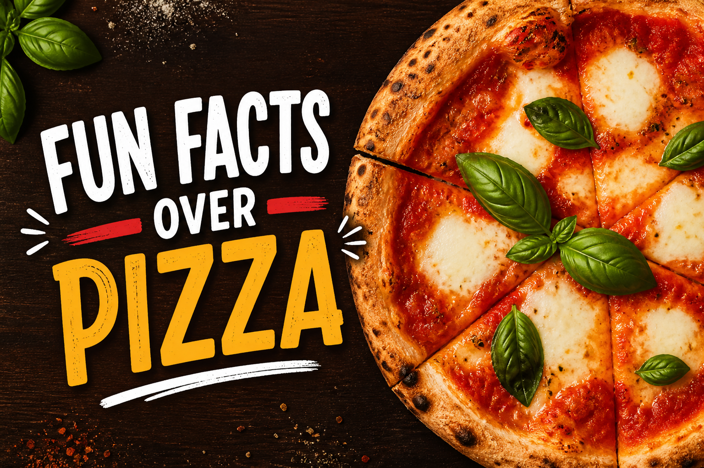

🍕 Pizza Fun Facts

-
🍕 Een pizza zo groot als een park
De grootste pizza ooit gemaakt was maar liefst 1261 m² (2012). Dat is ongeveer zo groot als vijf tennisvelden. -
🍕 Pizza voor een fortuin
De duurste pizza ter wereld kostte rond de €10.000 en werd gemaakt met luxe ingrediënten zoals kaviaar en truffel. -
🍕 Pizza is overal
In de Verenigde Staten worden elke dag ongeveer 13 miljoen pizza’s gegeten. -
🍕 De wereldfavoriet
De populairste topping ter wereld is simpel: pepperoni. -
🍕 Pizza-avond is heilig
Zaterdagavond is wereldwijd het populairste moment om pizza te bestellen. -
🍕 Een pizza-paradijs in Europa
In Noorwegen eten mensen gemiddeld de meeste pizza per persoon in Europa. -
🍕 Een koninklijke pizza
De bekende Pizza Margherita is vernoemd naar een Italiaanse koningin. -
🍕 Pizza parfum?
Ja echt — er bestaat zelfs een pizza-parfum, gemaakt als marketingstunt. -
🍕 De eerste online bestelling
In 1994 werd de allereerste pizza online besteld. -
🍕 Japanse creativiteit
In Japan vind je pizza’s met toppings zoals inktvis en mayonaise. -
🍕 Zoet en pizza?
In Brazilië bestaan zelfs dessertpizza’s met chocolade en aardbei. -
🍕 De geheime naam van de korst
De rand van een pizza heet officieel de cornicione in Italië. -
🍕 Pizza als sport
Er bestaat zelfs een wereldkampioenschap pizzabakken. -
🍕 Eten op jouw manier
Sommige mensen eten pizza met mes en vork, anderen gewoon met hun handen. -
🍕 De oudste pizzeria in de VS
Lombardi’s bestaat al sinds 1905 en is de eerste pizzeria in Amerika. -
🍕 Pizza maand
Oktober wordt in de VS vaak gezien als National Pizza Month.